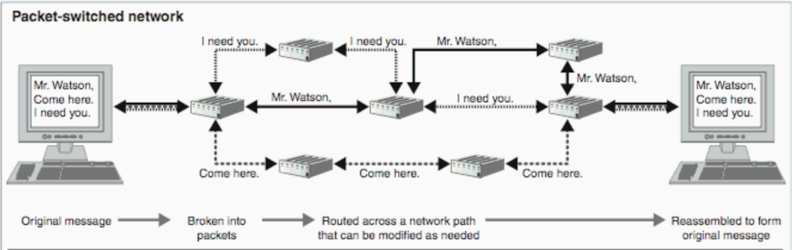

Packet switching
Introduction
Packet switching is a digital networking communications mechanism in which data is split into smaller pieces or blocks in order to obtain a faster and more efficient transfer via different network devices. These packets are then routed by intermediate nodes (network devices) to the destination.
History
The packet switching model was designed for military purposes in the 1960s during the cold war, but was only first implemented on small computer networks in 1968. Packet switching became one of the fundamental networking technologies that thoroughly shaped the Internet. In the history of the Internet the packet switching model found applications in many Internet networks, such as ARPANET and CYCLADES.
The first packet switching network was set up for computer resource sharing in the Octopus Network at the Lawrence Livermore National Laboratory. It connected four computers to several shared storage devices.
In 1973 Vint Cerf and Robert Kahn designed the Transmission Control Protocol (TCP), a computer networking protocol that defines how computers and electronic devices should be connected over the Internet and how data should be transmitted between them.
Technical design
There are two different designs of packet switching. In the Connectionless Packet Switching, each packet contains the information needed for delivery and is routed one by one. This can result in out-of-order delivery, which means that the data packets are delivered in a different order from which they were sent. With this type of packet switching, each packet has the following information written in its first section:- The delivery address
- The source address
- Total number of pieces
- The sequence number (needed to enable reassembly)
In the Connection-Oriented Packet Switching, data packets are sent sequentially, which means one after another, over a determined route. Packets are then reassembled, thanks to the sequence number and then shipped over the network to a destination.
External Links
- Original IT Law Wikia image
{kind=link}